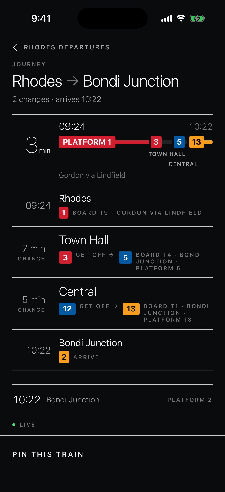
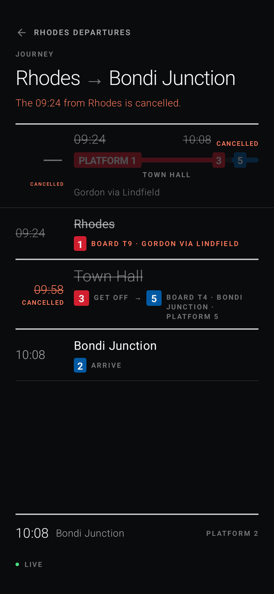
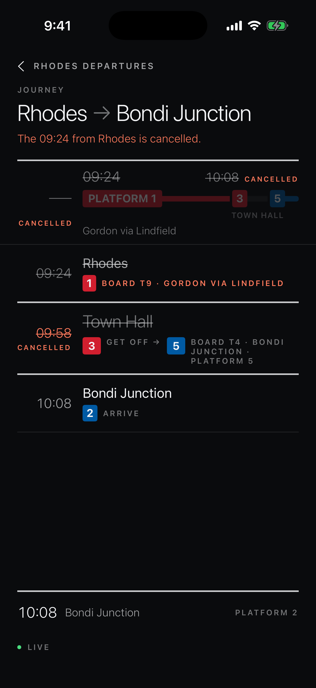
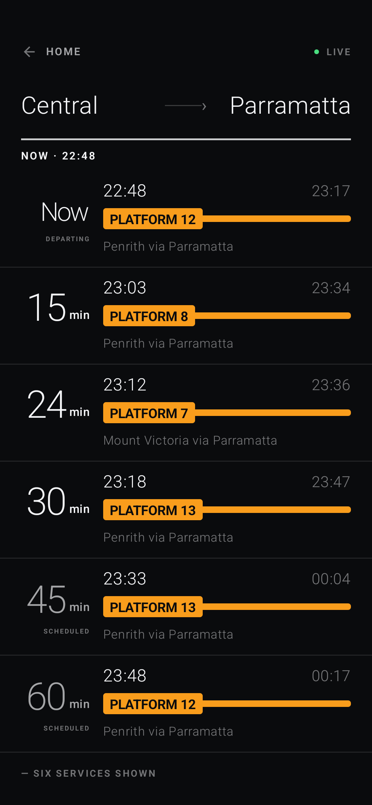
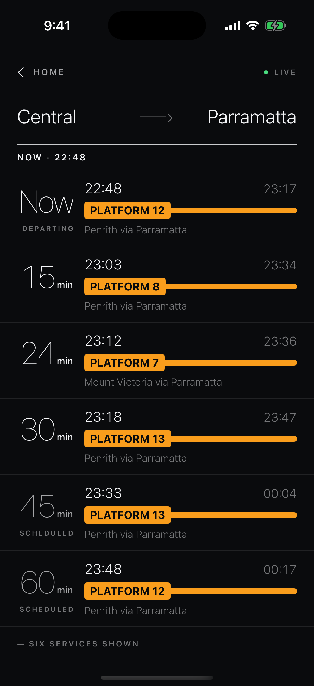
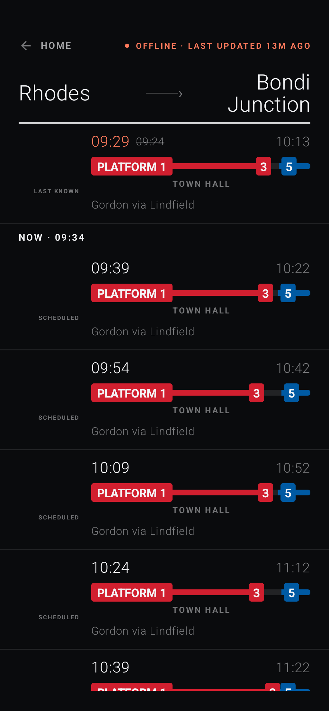
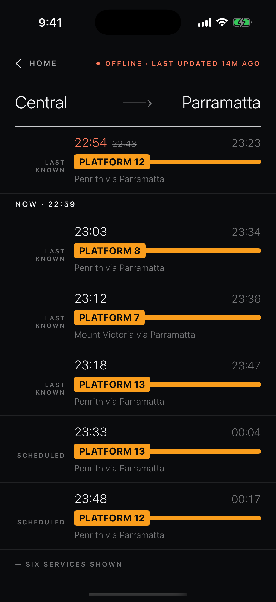
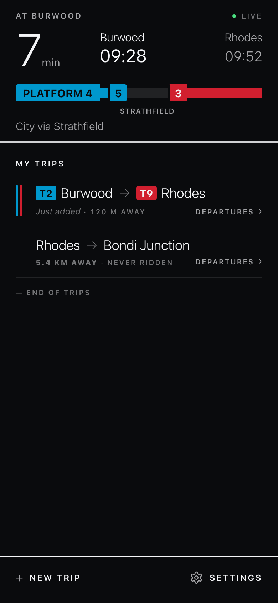
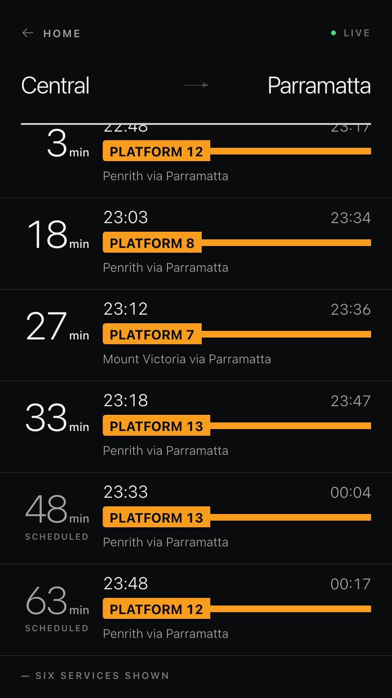
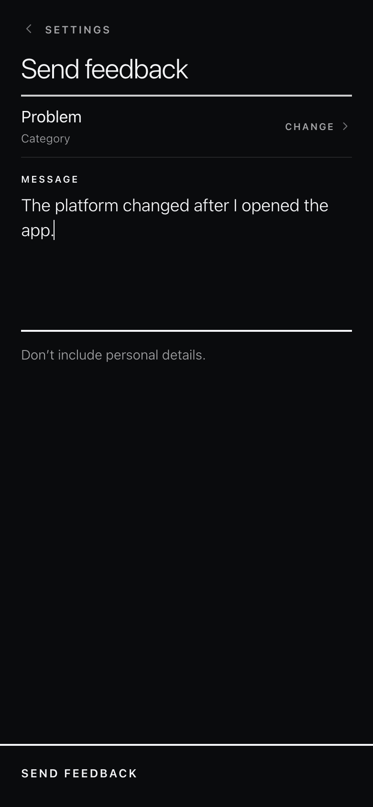

Native review: visual evidence
No fixes approved. Review all approval groups and user impact · Read the corrected 64-entry audit
Read-only evidence catalog for approval grouping. Every image below is an existing capture from the real web, Android, or iOS renderer. Click any phone image for its full-resolution file. The rejected custom-rendered comps are not used.
Open the detailed visual source audit
D1 + D2 — two-change journey axis
Matched fixtureMatched clockReal native captures
Android joins Town Hall · Central into one centred label and draws the second alighting pin 12. iOS associates each name with its dwell and suppresses the later alighting pin. The owner has ruled iOS correct.

detail-two-change.{kind=link}

D3 — cancelled tight-change treatment
Matched fixtureMatched clockSource-confirmed
Android's source still colours a short dwell by time alone; iOS and web suppress the tight warning when the journey is cancelled. The marker is subtle in these full frames, so source is the decisive proof.
{kind=link}

{kind=link}

D5 — reachable figure sizing
Matched boardNow · 22:48Real native captures
Android reduces Now; iOS leaves it at the ordinary numeral size. Source also confirms that native width checks ignore the small separate H when evaluating 10H. The intended token counts H only for hour figures; ordinary min does not make a numeral wide. Both native renderers already keep H small; the prior large-H image was a comp bug and is excluded.
{kind=link}

{kind=link}

D8 — Android boarding-chip overhang
Android-onlyOwner screenshotSource-confirmed
The blue ride segment begins before the blue 5 chip because Android offsets the chip without covering the strip. iOS puts the spacing inside a ground-backed marker, so source clears iOS of the same defect.
{kind=link}

D4 — retained provenance presentation
Held for a matched retained-state capture and owner choice.
iOS visibly wraps LAST KNOWN to two lines. This frame does not show the previously claimed broken row reflow. The available Android retained state uses a different route, delay, clock, and scroll position.
{kind=link}

C9 — web reference for “Just added”
Web rendererReference only
Source confirms both native clients omit the once-per-open receipt. This actual web frame shows the contract behavior; no matched native state exists, so it is not a parity comparison.
{kind=link}

home-just-added.C10 — web footer reference
Held for a board-depth and footer decision.
The web's six-row page can truthfully end with its six-service rule. Native requests can contain 10 online or 24 local rows, while current calibration images contain only six. This image documents the web endpoint only; it cannot prove a native fix.
{kind=link}

D6 — web feedback focus reference
Web rendererReference only
Android source confirms the draft is screen-local and its field has no focus-dependent treatment. This web frame shows the strong rule/label state; navigation retention itself requires behavioral verification during implementation.
{kind=link}

Evidence deliberately deferred
C6 freshness/retention needs matched fresh-live, recent server-stale, aged, failed, schedule-only, and retained states before selecting a fix. C10 needs a displayed-slice/footer policy before a native comp can be meaningful. D4 needs a matched retained capture if the owner wants convergence. C1, C2, C4, C5, C7, C8, C11, and the source portions of C3/C9 are verified in code but lack valid matched visual artifacts; they are documented in findings.md without fabricated screenshots.